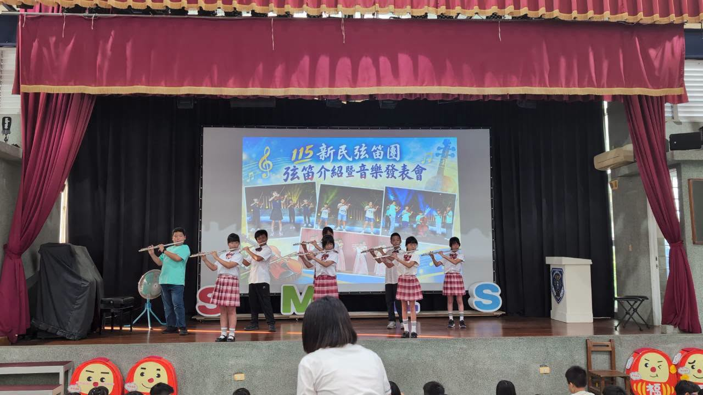
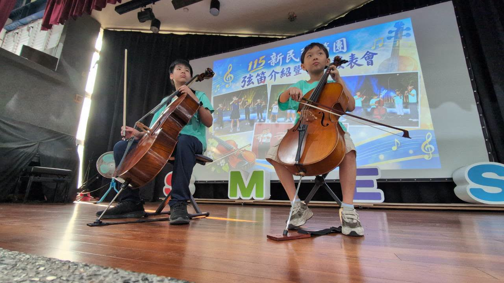
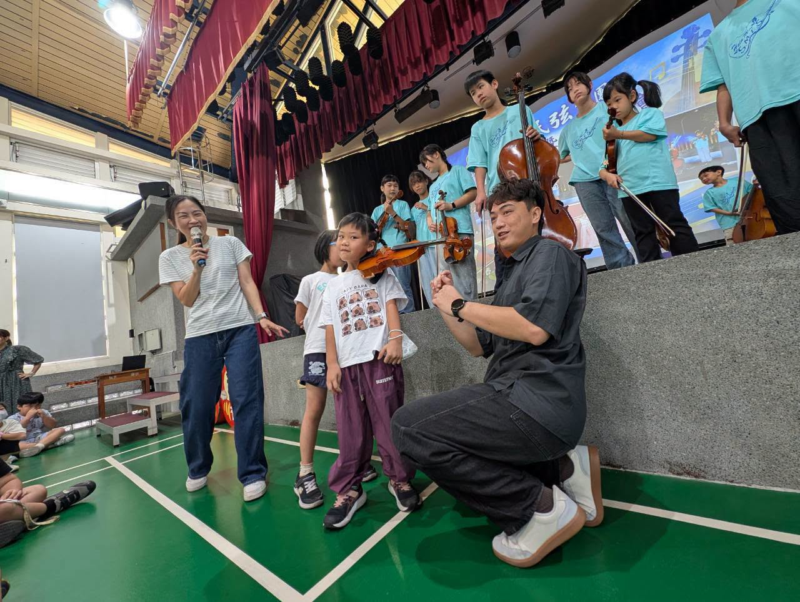

Early this morning, the Hsinmin assembly hall filled with music — and with the curious eyes of children. Students from grades one to three stepped into the world of music together: meeting the instruments up close, listening to their seniors play, and feeling the confidence and glow of the stage.
The 114 and 112 flute ensembles opened the morning, moving from the familiar 〈Little Lamb〉 and 〈Lullaby〉 to the stirring 〈See, the Conquering Hero Comes〉. With their flutes, the players opened the door to music for their juniors.
Then Director Tsai-yun introduced the gleaming flute itself — headjoint, body, and footjoint; embouchure hole and keys. Bright, clear, and elegant, the flute is the 「silver sprite」 of the orchestra.


長笛團為學弟妹打開音樂的大門，大提琴組也迎來第一次合奏
Next came the strings. A sixth-grade cellist and a second-grade cellist played 〈Melody〉 together — the cello group's very first duet, and a fine one at that.
Then the full string ensemble took the stage, with the competition team performing alongside the 114 and 112 ensembles for the first time. From the playful 〈Mushroom Soup〉 and the much-loved 〈Doraemon〉, to 〈Golden〉 — which the whole hall ended up humming along to — one familiar, lively piece after another held the children's eyes and ears. Before long, everyone was swaying along with the rhythm.
Strings teacher Mr. Lai then introduced the violin family, explaining what makes each instrument special and inviting children up on stage to try holding a violin under the chin themselves.

In every pair of curious eyes, in every brave attempt, you could see children meeting music for the first time. 💕
Getting to know music, and learning music, is not only about playing a piece. It is a journey of learning, practicing, and growing.
期待今天的小小音樂家們，
因為一次聆聽、一場體驗，
而在心裡種下一顆喜歡音樂的種子。
Maybe one day you'll pick up an instrument of your own and play your very first piece. Do you like music? Want to give it a try? Come and join the Hsinmin String and Flute Ensemble — let's use music to know ourselves, and shine bravely together! 🎵
新生音樂發表暨弦笛樂器介紹會～～熱鬧登場！
今天一大清早，新民集會堂裡充滿了悠揚的樂聲與孩子們好奇的眼神。一至三年級的小朋友一起走進音樂的世界，近距離認識樂器、聆聽學長姐的演奏，也感受舞台上的自信與光芒。
首先由 114 長笛與 112 長笛團帶來精彩演出，從熟悉的〈小綿羊〉、〈搖籃曲〉，到充滿氣勢的〈英雄今日得勝歸〉，長笛團的孩子們用笛聲，為學弟妹打開音樂的大門。
接著采筠主任介紹亮晶晶的長笛，從笛頭、笛身到笛尾，吹口到按鍵，長笛的聲音明亮、清澈且優雅，是管弦樂團中的「銀色精靈」。
接著弦樂團由大提琴組合，六年級學長與二年級小學弟，共同演奏〈Melody〉，這是大提琴組第一次合奏，表現可圈可點。
緊接著上場的弦樂團，則由比賽團學長姐第一次和 114 團與 112 團一起表演，不管是可愛俏皮的〈蘑菇濃湯〉、耳熟能詳的〈哆啦A夢〉，到最後全場一起哼唱的〈Golden〉，一首首熟悉又充滿活力的樂曲，讓現場的小朋友看得目不轉睛，聽得開心而入神，沉浸在這樣的音樂旋律裡，大家都忍不住跟著旋律節奏搖擺律動了起來。
弦樂團賴老師接著帶著孩子們認識小提琴家族，不只介紹樂器的特色，還邀請小朋友上台親自體驗「夾琴」的姿勢。從一雙雙好奇的眼睛、一次次勇敢的嘗試，看見孩子們與音樂相遇的美好時刻💗
認識音樂，學習音樂，不只是演奏一首曲子，更是一段學習、練習與成長的旅程。期待今天的小小音樂家們，因為一次聆聽、一場體驗，而在心裡種下一顆喜歡音樂的種子。也許有一天，你們會拿起自己的樂器，演奏出屬於自己的第一首樂曲。
喜歡音樂嗎？想親自試試看嗎？歡迎加入新民弦笛團，讓我們一起用音樂認識自己、勇敢發光！
Tap 🔊 to listen · 點喇叭聽發音
The flute sounds bright, clear, and elegant.長笛的聲音明亮、清澈而優雅。
Two players shared the stage for a cello duet.兩位團員一起上台演出大提琴二重奏。
Children came up to try holding a violin.小朋友上台體驗夾著小提琴的姿勢。
The whole ensemble played together on stage.整個樂團一起在舞台上演出。
A familiar melody had everyone humming along.熟悉的旋律讓大家跟著哼唱。
Good posture is the first step in playing well.正確的姿勢是拉得好的第一步。
Match the word to its meaning
把英文和中文配對
Matched 配對成功：0 / 6